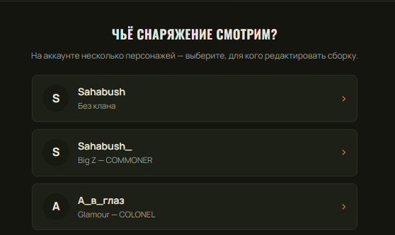
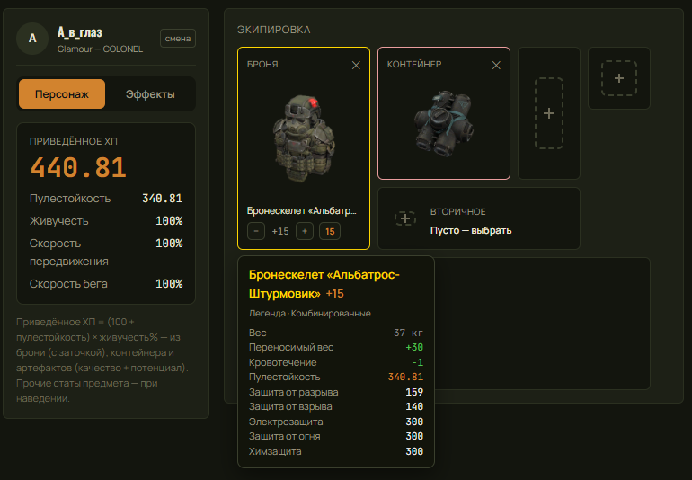
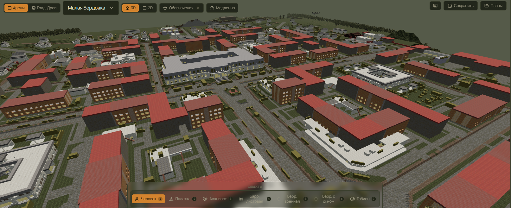
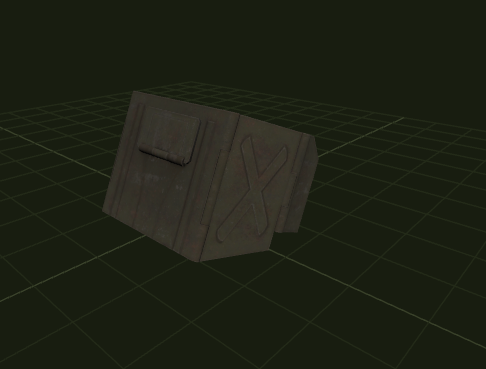

Рады анонсировать сразу большой пласт нового. Переработанная система входа. Личный редактор снаряжения с полным калькулятором брони и артефактов. Карты мира, собранные из игры, и настоящие 3D-модели построек вместо кубиков. Личная статистика для каждого игрока. И внятный план на то, что будет дальше. А ещё — сервис уходит от подписки в бесплатную модель.
вход и аккаунты
Мы переработали систему входа. Раньше зайти можно было только через Discord — теперь способов больше, а сама авторизация стала заметно надёжнее.
Что нового:
Главное изменение — мы полностью перешли с прежних токенов (JWT) на сессионные cookie-файлы.
Если по-простому: раньше «пропуск» от вашего входа лежал в хранилище страницы, откуда его
теоретически мог утянуть вредоносный скрипт. Теперь сессия хранится в защищённой служебной
куке (httpOnly), к которой сам сайт-страница доступа не имеет, — украсть её из
браузера намного сложнее. Пароли, как и прежде, никогда не хранятся в открытом виде,
а платёжные и чужие учётные данные мы не видим и не храним.
Изменения затрагивают только вход — вся ваша статистика, кланы и история на месте. Если после обновления сайт попросит войти заново — это нормально, просто зайдите привычным способом. Заодно обновили документы: Политику конфиденциальности и Пользовательское соглашение.
снаряжение
Большая новая штука — редактор снаряжения прямо в личном кабинете. Это не просто «повесить картинки брони»: под ним полноценный калькулятор, который считает так же, как игра. Броня, контейнер, набор артефактов — а на выходе честные итоговые цифры сборки.

Что уже умеет калькулятор:

Скоро каждый игрок сможет привязать сборку к своему профилю и сам решать, кому её показывать: держать при себе, открыть всему клану или сделать полностью публичной. Отличный способ показать напарникам, в чём вы выходите на КВ, и обсудить билды всей командой.
личная статистика
Ещё одно, чего давно ждали: личная статистика в кабинете у каждого игрока, а не только у руководства клана. Загруженные командой скриншоты КВ — это ведь и ваши бои тоже, логично видеть по ним свою историю.
Работает честно и прозрачно: пока оригинальные скриншоты живы — то есть их не удалило руководство подразделения и не унёс 90-дневный таймер хранения — вы сможете смотреть свою личную статистику по этим боям в своём кабинете. Никакой магии: есть данные — есть и ваша сводка по ним.
карты мира
В прошлом девлоге мы рассказывали, как научились доставать чистые карты прямо из файлов игры — вид сверху, без меток и интерфейса, да ещё и с «рентгеном» планировки зданий. Теперь эти карты живут не в вакууме: мы собираем их в полноценный планировщик клановых войн.

Карта читается как настоящая топография района: видно застройку, проезды и open-пространства,
по которым и строится тактика на КВ. Сверху ложится слой обозначений — точки, маршруты и
объекты, которые можно расставлять и двигать прямо в 3D. Есть переключение
3D / 2D, выбор арены и режим Голд-Дропа.
Извлекатель карт по-прежнему выложен бесплатно и открыто отдельным инструментом — он только читает ваш локальный кэш игры, ничего в ней не меняет, не лезет в сеть и не даёт преимуществ в бою.
объекты планировщика
Первые версии планировщика расставляли объекты «кубиками» — грубыми процедурными заглушками просто чтобы обозначить, что и где стоит. Теперь мы меняем их на настоящие 3D-модели инженерных построек КВ: баррикады, палатки, аванпосты, габионы и прочая фортификация.

Разница не только косметическая. Реальные габариты и форма построек важны для планирования: баррикада перекрывает конкретный сектор, у палатки свой силуэт, аванпост занимает своё место. С точными моделями план на КВ ближе к тому, что реально будет на поле.
Библиотека моделей продолжит пополняться — доводим объекты по одному, чтобы каждый выглядел и стоял на карте так, как в игре.
распознавание
По распознаванию таблиц КВ продолжаем то, о чём писали раньше. Новый движок распознаёт заметно точнее старого — настолько, что прежняя «чистилка» вывода (её писали под мусорный текст старого OCR) начала ему мешать и портить уже верные строки. Мы переписали постобработку под чистый вывод.
Следующий большой шаг — единый конвейер распознавания со всех источников и новый автодетект таблицы. Формат игровых таблиц мы планируем менять, и старый детектор сетки под него уже не подойдёт — границы, строки и колонки будем находить заново, под новую раскладку. Плюс распознавание уезжает на GPU, чтобы держать скорость при потоке скриншотов.
Делаем всё по порядку, чтобы релиз был стабильным: сперва новый детект и парсинг под новый формат, потом — открытие для всех. Расскажем подробнее в следующем девлоге.
что дальше
Отдельно — карта того, что уже в работе и приземлится в ближайших обновлениях. Многое из этого напрямую вырастает из нового OCR и разбора данных боёв:
Список живой — что-то выйдет раньше, что-то позже, но направление именно такое: меньше ручной рутины, больше автоматики и полезных мелочей вокруг КВ.
поддержать
Мы переводим SCWA на бесплатную модель — уже в ближайшем обновлении подписки не станет, и весь функционал будет доступен без оплаты. Но серверы, вычисления под OCR/сканер и разработка всё равно чего-то стоят, поэтому проект будет жить на добровольной поддержке. Донат ничего не «открывает» и не даёт преимуществ — он просто помогает всему этому выходить в свет быстрее. Спасибо, что вы с нами 💛